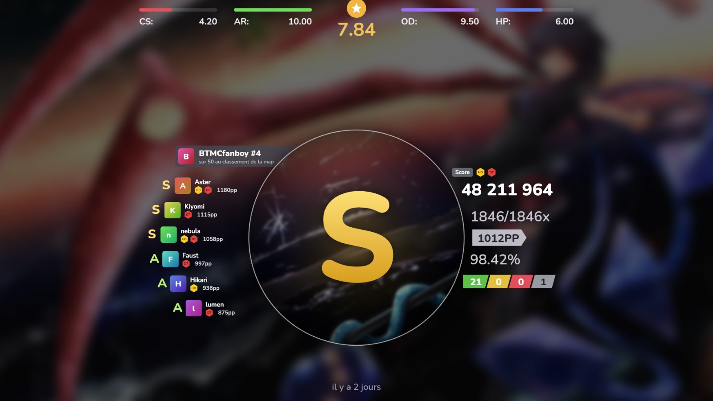
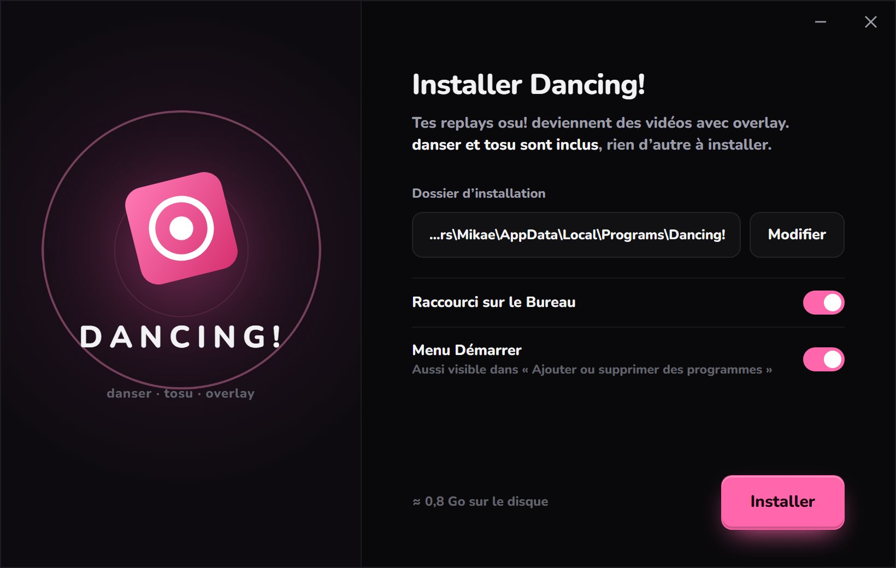

01 — Overlay
Un overlay de tournoi, à ton style.
Bandeau de vie, combo et pp qui défilent, barre d’erreur, classement trié par pp. Dix presets, couleurs et disposition réglables à la souris.
Gratuit pour Windows 10 et 11
Glisse un .osr, choisis ton overlay, exporte. Dancing! rejoue la partie avec danser, dessine l’overlay image par image et sort une vidéo prête à poster.
Anatomie d’une image
Ton .osr, ton skin, la map d’origine. Le flou de mouvement est calculé sur GPU.
Score, combo, pp en direct, barre d’erreur, classement de la map. Même horloge que la vidéo : synchro à l’image près.
Widgets Dancing! et catalogue tosu, placés à la souris, alimentés par les données du replay.
Tout est fusionné par ffmpeg, en tranches rendues en parallèle sur tous les cœurs du processeur.
Sous le capot
Cercles, sliders, curseur, skin, fond de la map : chaque image est calculée par les cœurs de la carte. Avec le flou de mouvement, il en calcule 4 à 14 par image et les fusionne.
Textures du skin et de la map, images intermédiaires du flou : elles vivent dans la mémoire de la carte, sans aller-retour vers le reste du PC.
NVENC chez NVIDIA, AMF chez AMD, QSV chez Intel : elle compresse la vidéo sans occuper les cœurs. Sans elle, x264 encode sur le processeur.
Les images partent vers le processeur. Dancing! y dessine l’overlay et les widgets, puis ffmpeg fusionne le tout, en tranches rendues en parallèle sur tous les cœurs.
Le résultat
Fonctions
Bandeau de vie, combo et pp qui défilent, barre d’erreur, classement trié par pp. Dix presets, couleurs et disposition réglables à la souris.

danser ne le gère pas : Dancing! a son propre moteur. Notes longues, jugements, musique, et trois overlays rien que pour lui.

Neuf widgets où le jeu derrière est vraiment flouté, tout le catalogue tosu, et un créateur sans code : 26 données, polices, couleurs, animations.

Carte de la map avant la partie. Après, l’écran Loupe (ta note dans un cercle en verre, le classement de la map) ou Classique. La musique de la map joue dessous.

danser, tosu, ffmpeg et le moteur des widgets sont inclus. Les nouvelles versions sont proposées au démarrage et s’installent en un clic, réglages gardés.
Fiche technique
Questions
Un logiciel Windows qui prend un replay osu! (.osr) et en fait une vidéo prête à poster : le jeu rendu par danser, un overlay animé par-dessus, une intro et un écran de résultats.
Non. danser, tosu, ffmpeg et le moteur des widgets sont fournis avec Dancing!. Il te faut juste osu! et tes maps.
Oui, avec trois overlays exclusifs. Seules les maps standard jouées en mode mania (maps converties) ne sont pas encore prises en charge.
Quand une nouvelle version sort, Dancing! te la propose au démarrage : clique sur « Mettre à jour », il se ferme, s’installe et redémarre tout seul. Tes réglages, presets, replays importés, widgets et vidéos sont gardés.
Non, le classement global s’affiche tout seul pour les maps classées et loved. Tu peux quand même mettre ta propre clé dans les réglages.
Oui, Windows prévient pour les programmes peu connus. Clique sur « Informations complémentaires », puis « Exécuter quand même ».
Non, c’est un projet indépendant, sans lien avec ppy. Il s’appuie sur danser et tosu, chacun sous sa propre licence.
Windows 10 / 11 · gratuit